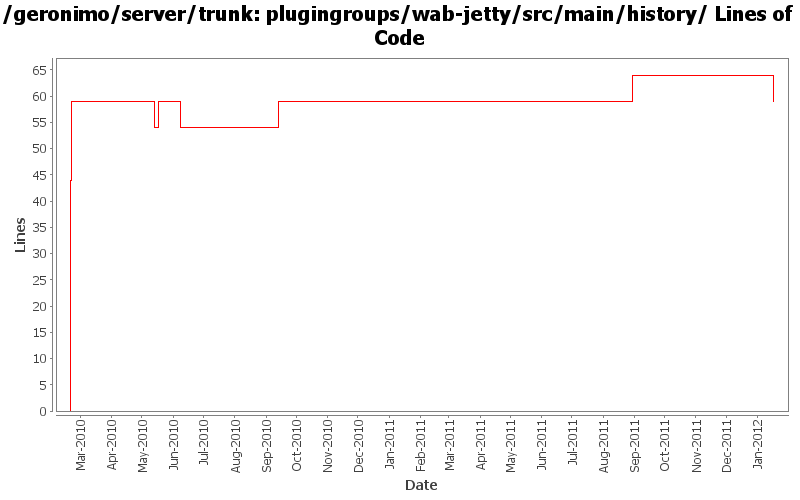

[root]/plugingroups/wab-jetty/src/main/history

| Author | Changes | Lines of Code | Lines per Change |
|---|---|---|---|
| Totals | 10 (100.0%) | 126 (100.0%) | 12.6 |
| dwoods | 5 (50.0%) | 104 (82.5%) | 20.8 |
| xuhaihong | 3 (30.0%) | 17 (13.5%) | 5.6 |
| gawor | 1 (10.0%) | 5 (4.0%) | 5.0 |
| djencks | 1 (10.0%) | 0 (0.0%) | 0.0 |
fix up build for karaf changes and modules that aren't built currently
0 lines of code changed in 1 file:
GERONIMO-5734 Enable sharelib in osgi based geronimo
5 lines of code changed in 1 file:
GERONIMO-5594 Reenable hot deploy on Geronimo 3.0
5 lines of code changed in 1 file:
remove default welcome app from WAB plugingroups and move to javaee groups
0 lines of code changed in 1 file:
get remote-plugin working
5 lines of code changed in 1 file:
Use servicemix bundlized Quartz
7 lines of code changed in 1 file:
minimal grouping is now wab and eba builds upon that
16 lines of code changed in 1 file:
rename old web plugins to wab and add myfaces
44 lines of code changed in 1 file:
rename wab to eba
0 lines of code changed in 1 file:
add RFC66 WAB plugingroups based on test servers under plugins/wab. Also rename tomcat plugin from javaee5 to javaee6.
44 lines of code changed in 1 file: